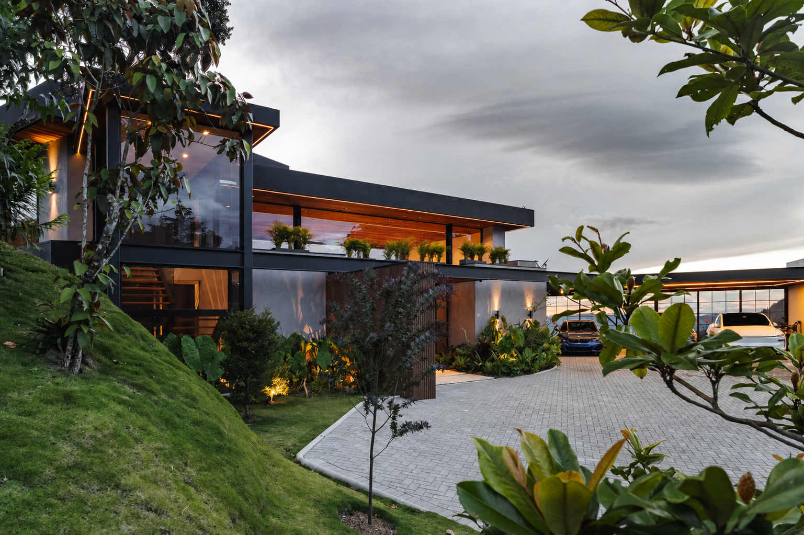

Arquitectura
Concepto, anteproyecto y desarrollo técnico-normativo.


ARQUATTRO · LLANOGRANDE, COLOMBIA
Arquitectura, interiorismo, construcción y desarrollo inmobiliario bajo una sola firma.
01
LA FIRMA
Arquattro diseña y construye residencias de alto nivel con una mirada sobria, atemporal y precisa. Integramos arquitectura, interiorismo, construcción y desarrollo inmobiliario para acompañar cada decisión desde el primer trazo hasta la obra terminada.
02
CAPACIDADES
Concepto, anteproyecto y desarrollo técnico-normativo.
Espacios, materiales y detalles concebidos para cada proyecto.
Planeación, ejecución y control de calidad hasta la entrega.
Oportunidades, alianzas y coordinación de desarrollos propios.
03
PROYECTOS
Algunos de los proyectos desarrollados por Arquattro.

01 · CONSTRUIDO

02 · CONSTRUIDO

03 · CONSTRUIDO

04 · CONSTRUIDO

05 · PROYECTO

06 · CONSTRUIDO

07 · EN OBRA

08 · PROYECTO

09 · PRÓXIMO INICIO DE OBRA

10 · PRÓXIMO INICIO DE OBRA

11 · PRÓXIMO INICIO DE OBRA

12 · PRÓXIMO INICIO DE OBRA

13 · PRÓXIMO INICIO DE OBRA

14 · CONSTRUIDO

15 · EN OBRA

16 · CONSTRUIDO
04
MÉTODO
Cada proyecto comienza con una lectura cuidadosa del lugar, el programa y la forma de habitar. Coordinamos diseño, presupuesto, materialidad y ejecución con alcances claros para proteger la intención del proyecto hasta su entrega.